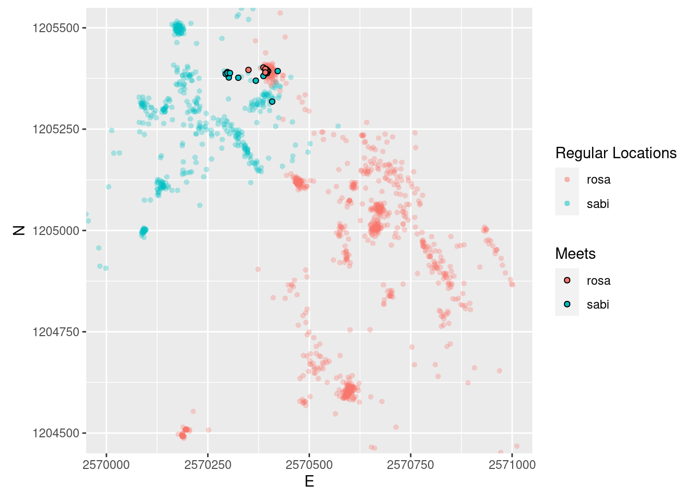

testfun <- function() {}Tasks and inputs
Up to now, we have used a variety of different functions designed by other developers. Sometimes we need to execute an operation multiple times, and most often it is reasonable to write a function to do so. Whenever you have copied and pasted a block of code more than twice, you should consider writing a function (Wickham and Grolemund 2017).
We have violated this rule multiple times when calculating the Euclidean distances between points. Writing and rewriting the code sqrt((x-lead(x,1))^2+(y-lead(y,1))^2) over and over again is not only cumbersome, it is also error prone. We can easily wrap this operation into a function. This input on writing functions should bring you up to speed to do this in your first task.
The first step in writing a function, is picking a name and assigning <- function(){} to it.
To run the function, we have to call the assigned name with the brackets. This function gives no output, which is why we get NULL back.
testfun()NULLclass(testfun)[1] "function"To make the function actually do something, we need to specify what should be done within the curly brackets {}. The following function always prints the same statement and accepts no input values:
testfun <- function() {
print("this function does nothing")
}
testfun()[1] "this function does nothing"If we want the function to accept some input values, we have to define them within the round brackets. For example, I specify a variable named sometext and can call this variable within the execution.
testfun <- function(sometext) {
print(sometext)
}
testfun(sometext = "this function does slightly more, but still not much")[1] "this function does slightly more, but still not much"
Note
testfun <- function(sometext) {
print(sometext)
}Note that since R Version 4.1, the above syntax can also be written as follows:
testfun <- \(sometext){
print(sometext)
}or even more compact:
testfun <- \(sometext) print(sometext)Let’s take a more practical example. Say we want a function that calculates our age if provided with the date of our birthday. We can use Sys.time() to provide today’s date and difftime() to calculate the time difference between today and our birthday.
my_age <- function(birthday, units) {
difftime(Sys.time(), birthday, units = units)
}
my_age(birthday = "1997-04-23", units = "days")Time difference of 9515.312 daysAs we already know from using other functions, if we declare our variables in the order that we initially listed them, we do not need to specify the parameters (no need of birthday = and units =).
my_age("1997-04-23", "days")Time difference of 9515.312 daysIf we want any of our parameters to have default value, we can assign an initial value to the parameter when declaring the variables within the round brackets.
my_age <- function(birthday, units = "days") {
difftime(Sys.time(), birthday, units = units)
}
# if not stated otherwise, our function uses the unit "days"
my_age("1997-04-23")Time difference of 9515.312 days# We can still overwrite units
my_age("1997-04-23", "hours")Time difference of 228367.5 hoursAll you need to do now is run execute the function deceleration (myage <- function... etc.) at the beginning of your script, and you can use the function for your entire R session.
Important
Task 1: Write your own functions
Create a function for our Euclidean distance calculation.
Note: If your function can handle vectors (i.e. inputs with length > 1) and the output is of the same length as your input, it will work in dplyrs mutate() and summarise() operations (respecting groups etc).
Task 2: Prepare Analysis
In the next tasks we will look for “meet” patterns in our wildboar data. To simplify this, we will only use a subset of our wildboar data: The individuals Rosa and Sabi for the timespan 01.04.2015 - 15.04.2015. You can download the dataset here wildschwein_BE_2056.csv and filter it with the aforementioned criteria.
Remember to load the necessary libraries first! We propose the following:
library("readr")
library("dplyr")
library("ggplot2")
library("lubridate")Task 3: Create Join Key
To compare Rosa and Sabi’s locations, we first need to match the two animals temporally. To simplify the problem, we will use a “classic” join operation1, for which we need identical time stamps to serve as a join key.
Have a look at your dataset. You will notice that samples are taken at every full hour, quarter past, half past and quarter to. The sampling time is usually off by a couple of seconds. We therefore need to slightly adjust our time stamps to a common, concurrent interval.
The task is therfore to round the minutes of DatetimeUTC to a multiple of 15 (00, 15, 30,45) and store the values in a new column2. You can use the lubridate function round_date() for this. See the examples here to see how this goes.
Your new dataset should look something like this (note the additional column):
# A tibble: 6 × 7
# Groups: TierID [1]
TierID TierName CollarID DatetimeUTC E N DatetimeRound
<chr> <chr> <dbl> <dttm> <dbl> <dbl> <dttm>
1 002A Sabi 12275 2015-04-01 00:00:11 2.57e6 1.21e6 2015-04-01 00:00:00
2 002A Sabi 12275 2015-04-01 00:15:22 2.57e6 1.21e6 2015-04-01 00:15:00
3 002A Sabi 12275 2015-04-01 00:30:11 2.57e6 1.21e6 2015-04-01 00:30:00
4 002A Sabi 12275 2015-04-01 00:45:16 2.57e6 1.21e6 2015-04-01 00:45:00
5 002A Sabi 12275 2015-04-01 01:00:44 2.57e6 1.21e6 2015-04-01 01:00:00
6 002A Sabi 12275 2015-04-01 01:15:17 2.57e6 1.21e6 2015-04-01 01:15:00Task 4: Measuring distance at concurrent locations
Now that we have prepared our Dataset, we can start measuring distances at concurrent locatinos. To do this, we need to follow the following steps.
- Split the
wildschwein_filterobject into onedata.frameper animal - Join3 these datasets by the new
Datetimecolumn created in the last task. The joined observations are temporally close. - In the joined dataset, calculate Euclidean distances between concurrent observations and store the values in a new column
- Use a reasonable threshold on
distanceto determine if the animals are also spatially close enough to constitute a meet (we use 100 meters). Store this Boolean information (TRUE/FALSE) in a new column
Task 5: Visualize data
Now, visualize the meets spatially in a way that you think reasonable. For example in the plot as shows below. To produce this plot we:
- Used the individual dataframes from
rosaandsabi(from the previous task) - Used the joined dataset (also from the previous task), filtered to only the meets

Task 6 (optional): Visualize data as timecube with plotly
Finally, you can nicely visualize the meeting patterns and trajectories in a Space-Time-Cube (Hägerstraand 1970) with the package plotly. There are some nice ressources available online.
Task 7: Find “Meet Patterns” in your own tracking data
You can apply what we did with the wild boar data to your own data. Of couse, it does not make sense to look for meeting patterns with yourself. Instead, you can try to find a situation where you were in the same location at the same time of day.
- First you import your tracking data and prepare it as we discribed last week
- Create a new column
houras a decimal hour (hour = hour(datetime) + minute(datetime)/60 + second(datetime)/3600). - Then you round this value to a multiple that seems appriate (e.g., to round to 15 Minutes you can do:
hour_round = round(hour/0.25)*0.25). - Create two
data.frameseach containing the tracking data of only one day - Join the two
data.framesbyhour_round - Calculate distances at “concurrent” locations and filter you data to locations that are spatially close
Instead of a “classic” join, we could do a rolling join. This is a bit more complicated, and until recently was only implemented in the data.table package (e.g. this blogpost). While learning
data.tableis certanily very worthwile, it’s beyond the scope of this course. Meanwhile,dplyrhas also implemented rolling joins, but these are not as straightforward as classic joins.↩︎Please note: We are manipulating our time stamps without adjusting the x,y-coordinates. This is fine for our simple example, but we would advice against this in a more serious research endeavour, e.g. in your semester projects. One simple approach would be to linearly interpolate the positions to the new timestamps. If you choose Option A the wild boar projects as your semester projects, you should aim for a linear interpolation. Get in touch if you need help with this.↩︎
We recommend using one
dplyrs join methods (inner_join(),left_join(),right_join()orfull_join()), which one is appropriate? Tip: specifysuffixto prevent column names ending in.xor.y.↩︎